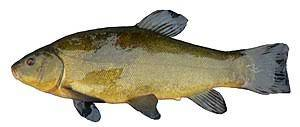
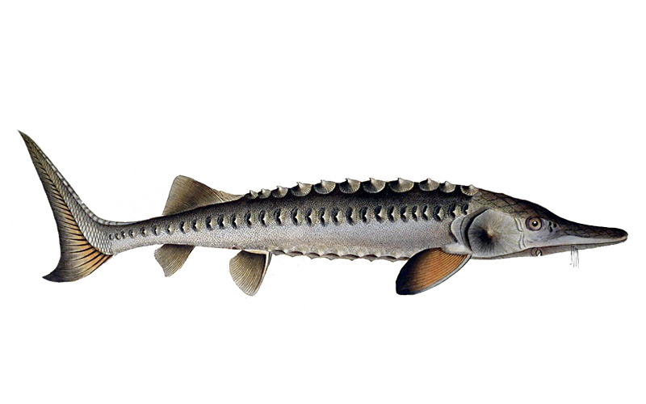
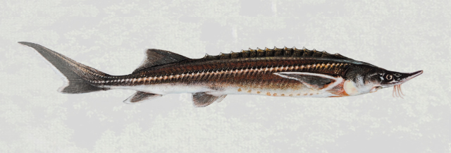
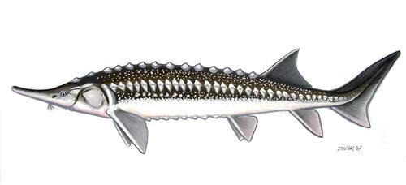
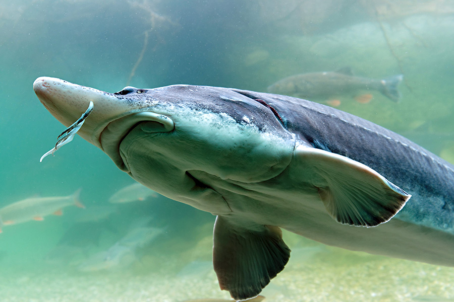

Was sind Süsswasserfische?
Süßwasserfische bewohnen die Binnengewässer, die Seen und Flüsse der Kontinente und Inseln. Fast alle Süßwasserfische gehören zu den Knochenfischen (Osteichthyes). Von den Knorpelfischen (Chondrichthyes) leben einige Rochenarten permanent im Süßwasser. Daneben gibt es wenige Haiarten, die gelegentlich die Flussmündungen hinauf in Süßgewässer wandern. Man unterscheidet die primären Süßwasserfische, die sich ursprünglich im Süßwasser entwickelt haben, die sekundären Süßwasserfische, die von marinen Vorfahren abstammen, und die peripheren Süßwasserfische, die Teile ihres Lebenszyklus im Süßwasser verbringen. Die meisten Süßwasserfische sind zum Verzehr geeignet, wie z. B. Hecht, Forelle, Wels, Karpfen und Aal. Kleinbleibende, bunte Arten sind oft beliebte Aquarienfische.
| Name | Bild | Essbar | Grösse |
|---|---|---|---|
| Schleie |  | JA | Bis zu 70cm |
| Europäischer Stör |  | JA | Bis zu 3 Metern |
| Sterlet |  | JA | Bis zu 100cm |
| Sternhausen |  | JA | Bis zu 2.9 Metern |
| Kaluga-Hausen |  | (JA) | Bis zu 2.3 Metern |